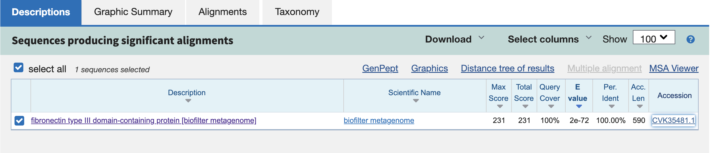
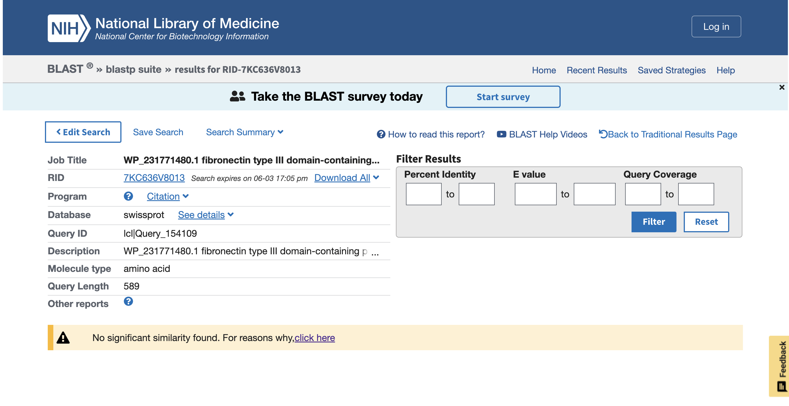
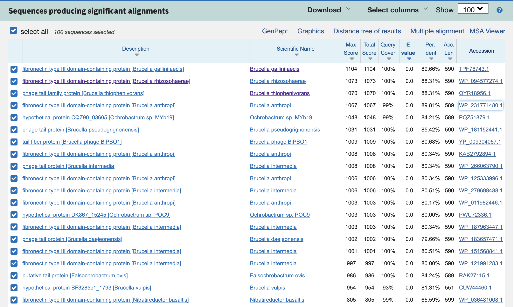
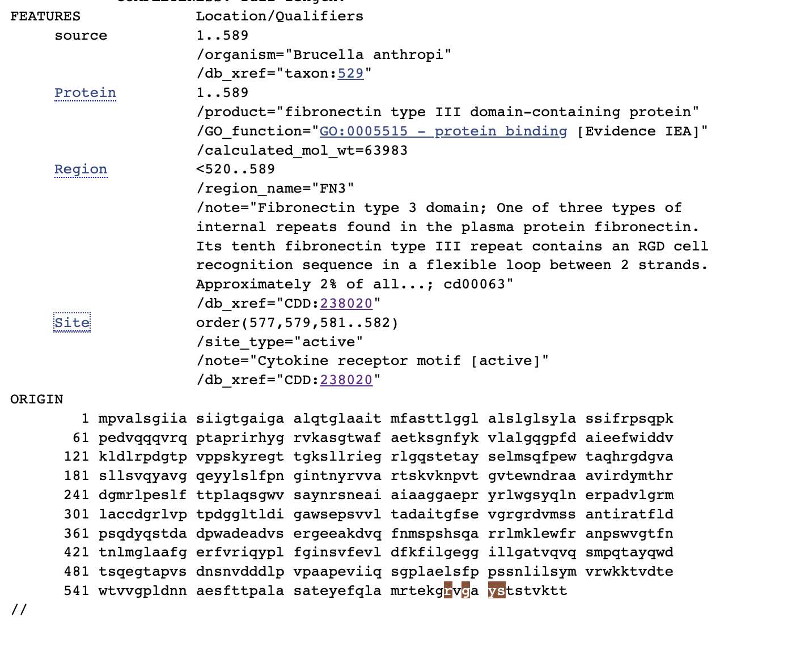
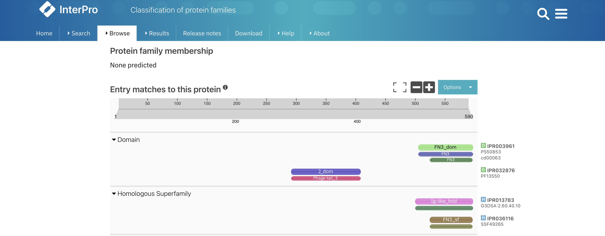
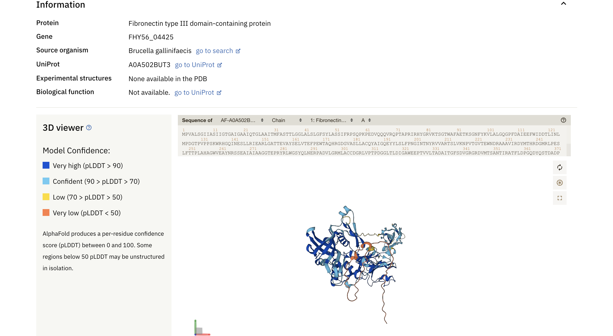
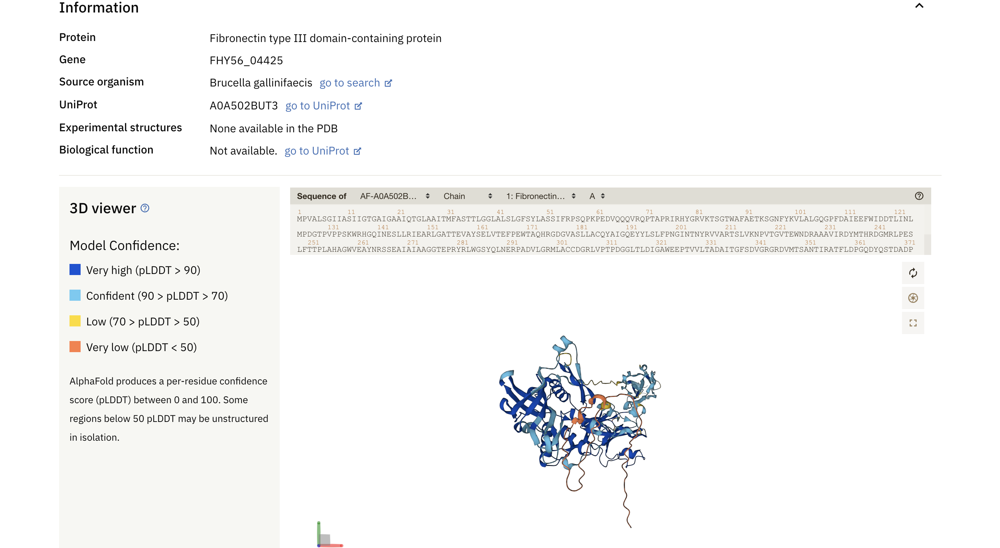

s40#
Avtor: Miljan Trajković
Datum izdelave: 2023-05-26
Koda seminarja: s40
Vhodni podatek#
Zaporedje:
S40 TADAITGFTDVGRGRDVMTSANTIRATFLDPNQDYQSTDADPWADEADVSERGEEAKDVQ FNMAPSHSQARRLMKLEWFRANPVWVGTFNTNLMGLAAFAKRFIRIQYPL
Rezultati analiz#
Identifikacija#
Protein: Fibronektin tip III domena-vsebujoč protein
Organizem: Brucella sp.
Potencialna funkcija proteina: Posreduje pri različnih proteinskih interakcijah in ima pomembno vlogo pri celičnem signaliziranju.

Splošna karakterizacija#
Zanimajo nas odgovori na naslednja vprašanja:
Kje v izvornem organizmu/celici se protein nahaja? Na osnovi funkcije sklepamo, da se ta protein nahaja v receptorjih na celični površini in v membrani.
Katere post-translacijske modifikacije ima? Protein in njegovi homologi nimajo anotiranih post-translacijskih modifikacij. 

Če želimo pripraviti protein v rekombinantni obliki, kateri gostiteljski organizem je najbolj smiselno izbrati in kateri del proteina bi izražali? Najbolj smiselno bi bilo izbrati nek podoben bakterijski organizem iz speciesa Ochrobactrum. Izražal bi fibronektin tip III domeno (ak ostanki 520-589: PPSNNLILSYMVRWRKTADSEWTTVGPLANNAERYTTPTLAALTQYQFQVALRTEKGRIGSYSPSTVRTT).
So znani kakšni homologi (ortologi, paralogi)? Kaj je znanega o njih (funkcija, modifikacije, regulacija, aktivno mesto, …)? Znani so homologi Brucella gallinifaecis, Brucella rhizosphaerae, Brucella anthropi. Edino, kar je znano o njih je aktivno mesto (iz GenBank-a), in sicer ostanki na mestih 577(R), 579(G), 581(Y) in 582(S).
Predstavlja naš protein encim ali gre za kak drug protein? Ne gre za encim, ampak za protein, ki vsebuje fibronektinsko tip 3 domeno.
Če gre za encim – ali je aktivno mesto v primerjavi z aktivnimi homologi ohranjeno? Čeprav ni encim, aktivno mesto je v primerjavi s homologi ohranjeno. 
Kaj so najbolj ohranjene regije v skupini, ki jo predstavlja ta protein in njegovi homologi? Najbolj ohranjena regija je predvsem FN3 domena, pa tudi phage-tail in protein J domena. 
So v zaporedju kakšne ponavljajoče se regije oz. motivi? Ne, niso.
S katerimi proteini ali drugimi molekulami bi lahko ta protein potencialno interagiral? Glede na to, da aktivno mesto predstavlja motiv citokinskega receptorja, lahko rečemo, da bi naš protein potencialno interagiral s citokini.
Strukturna katakterizacija#
Zanimajo nas odgovori na naslednja vprašanja:
Je znana struktura tega proteina ali njegovega dela? Struktura ni eksperimentalno določena, vendar obstaja napovedana struktura le-tega.
 
Je znana struktura homologov? Katerih? Ni znanih eksperimentalno določenih struktur homologov.
Pripravite model proteina oz. njegovega dela, ki bi predstavljal funkcionalen topen protein.

Primerjajte model oz. eksperimentalno strukturo z eksperimentalno strukturo homologa, osredotočite se na funkcijsko pomembne regije. Glede na to, da eksperimentalno določenih struktur homologov tudi ni, ne moremo jih primerjati.